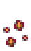
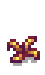
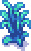

Fiber Seeds
Jump to navigation
Jump to search
| Fiber Seeds | |
| Plant these in any season. Does not require watering. Harvest with the scythe. Takes 7 days to grow. | |
| Information | |
| Crop: | Fiber |
| Growth Time: | 7 days |
| Season: |
All |
| Sell Price: | |
| Purchase Prices | |
| Not sold | |
| Not sold | |
| Not sold | |
| Crafting | |
| Recipe Name: | Fiber Seeds |
| Recipe Source: | |
| Ingredients: | |
| Produces: | 4 Fiber Seeds per craft |
Fiber Seeds are a type of crafted seed. They do not require daily watering and can even grow in Winter, but they must still be planted on tilled soil. They can also be eaten by Crows if not protected by a Scarecrow.
The recipe is obtained from Linus in the mail the day after completing the Special Order "Community Cleanup".
Each fully-grown plant drops between 4 and 7 Fiber when harvested with a Scythe. There is also a 10% chance to drop 1 Mixed Seeds.[1]
Stages
| Season | Stage 1 | Stage 2 | Stage 3 | Stage 4 | Harvest |
|---|---|---|---|---|---|
| Spring Summer |
|||||
| Fall |  |  |
|||
| Winter |  | ||||
| Days: | 1 Day | 2 Days | 2 Days | 2 Days | Total: 7 Days |
Tips
- Fiber Seeds can be planted during the last week of Fall to prevent fertilizers from disappearing on the first day of Winter.
- Although they are not considered "Crops", Junimos will still harvest them if in range of a Junimo Hut.
References
- ↑ See Crop::harvest in the game code.
History
- 1.5: Introduced.